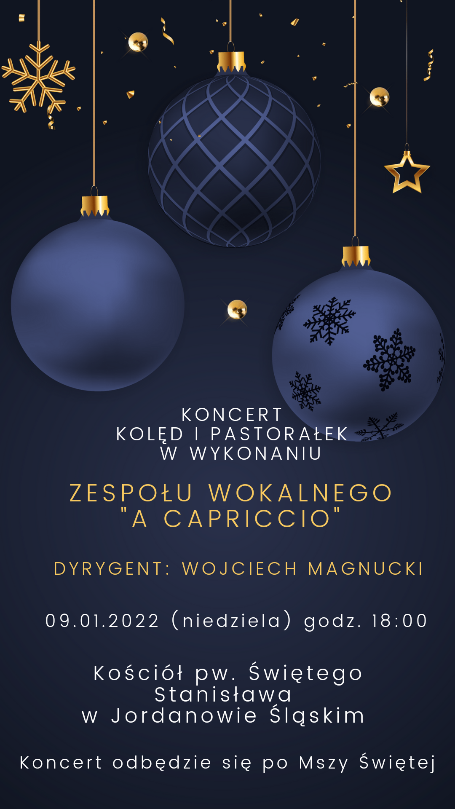

Drugi z tegorocznego cyklu koncertów kolęd.
A to komu aniołkowie
Bratřiko, stań a so zwoblekaj
Carol of the bells (ar. Pentatonix)
Coś się dzieje
Michael Praestorius − Es ist ein Ros entsprungen
Gdy się Chrystus rodzi (ar. Feliks Nowowiejski)
L. Tokarski, M. Pucia − Kołysanka - Kolęda
Hej w dzień narodzenia
Gdy się Chrystus rodzi (ar. Jerzy Rachubiński)
Maria durch ein Dornwald ging
Mario, czy ty wiesz (ar. Pentatonix)
Mizerna cicha
Nad Betlejem w ciemną noc
Tryumfy Króla Niebieskiego (ar. M. Bubaski i W. Magnucki)
Wśród nocnej ciszy
Z narodzenia Pana
Zaśpiewam Jezuskowi
Bardzo pozytywne. Liczebność osób również całkiem spora.
